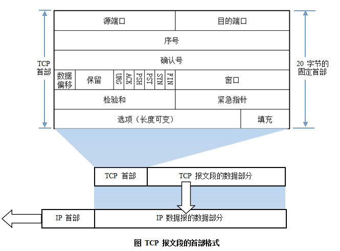
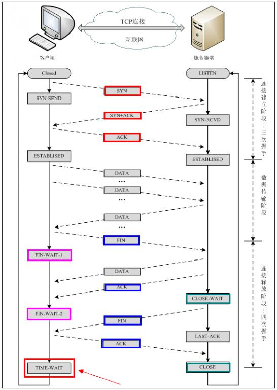

- 1. Network Layer Division
- 2. OSI Seven-Layer Network Model
- 3. IP Address
- 4. Subnet Mask and Network Division
- 5. ARP/RARP Protocol
- 6. Routing Protocol
- 7. TCP/IP Protocol
- 8. UDP Protocol
- 9. DNS Protocol
- 10. NAT Protocol
- 11. DHCP Protocol
- 12. HTTP Protocol
- 13. An Example
The core content of computer network learning is the study of network protocols. Network protocols are a collection of rules, standards, or conventions established for data exchange in computer networks. Because different users' data terminals may use different character sets, communication between them must be based on certain standards. A vivid analogy is our language. Our great country has a vast territory and a large population, with very rich local languages, and the differences between dialects are huge. A dialect from region A may be completely unacceptable to people from region B, so we need to establish a language standard for communication among people across the country; this is the role of Mandarin. Similarly, looking at the world, the standard language for communicating with foreign friends is English, which is why we have to study English so hard.
Computer network protocols, like our languages, are diverse. ARPA introduced a network protocol called ARPANET from 1977 to 1979, which was widely popular. The most important reason was that it introduced the well-known TCP/IP standard network protocol. Currently, TCP/IP protocol has become the "common language" in the Internet. The figure below is a schematic diagram of communication among different computer groups using TCP/IP.

1. Network Layer Division
In order to enable computers produced by different computer manufacturers to communicate with each other, and thus establish computer networks over a larger area, the International Organization for Standardization (ISO) proposed the "Open System Interconnection Reference Model" in 1978, namely the famous OSI/RM model (Open System Interconnection/Reference Model). It divides the communication protocols of computer network architecture into seven layers, from bottom to top: Physical Layer (Physics Layer), Data Link Layer, Network Layer, Transport Layer, Session Layer, Presentation Layer, Application Layer. The fourth layer completes data transmission services, and the upper three layers are user-oriented.
In addition to the standard OSI seven-layer model, common network layer divisions also include the TCP/IP four-layer protocol and the TCP/IP five-layer protocol. The correspondence between them is shown in the figure below:

2. OSI Seven-Layer Network Model
TCP/IP protocol is unquestionably the fundamental protocol of the Internet. Without it, it would be impossible to access the Internet at all, and any operation related to the Internet is inseparable from the TCP/IP protocol. Whether it is the OSI seven-layer model or the TCP/IP four-layer or five-layer model, each layer has its own exclusive protocol to complete its corresponding work and communicate with the upper and lower layers. Since the OSI seven-layer model is the standard hierarchical division of networks, we will introduce it layer by layer from bottom to top using the OSI seven-layer model as an example.

1) Physical Layer
Activate, maintain, and deactivate the mechanical, electrical, functional, and procedural characteristics between communication endpoints.This layer provides a reliable physical medium for transmitting data to upper-layer protocols. Simply put, the physical layer ensures that raw data can be transmitted over various physical media.For the physical layer, remember two important device names: repeater (also called amplifier) and hub.
2) Data Link Layer
The data link layer provides services to the network layer based on the services provided by the physical layer. Its most basic service is to reliably transmit data from the network layer to the target machine's network layer at adjacent nodes. To achieve this goal, the data link must have a series of corresponding functions, mainly: how to combine data into data blocks, which are called frames in the data link layer; the frame is the transmission unit of the data link layer; how to control the transmission of frames on physical channels, including how to handle transmission errors and how to adjust the sending rate to match the receiver; and how to provide management for the establishment, maintenance, and release of data link paths between two network entities. The data link layer provides reliable transmission over unreliable physical media. Its functions include physical address addressing, data framing, flow control, data error detection, retransmission, etc.
Important knowledge points about the data link layer:
1> The data link layer provides reliable data transmission for the network layer.
2> The basic data unit is the frame.
3> Main protocol: Ethernet protocol.
4> Two important device names: bridge and switch.
3) Network Layer
The purpose of the network layer is to achieve transparent data transmission between two end systems. Specific functions include addressing and routing, connection establishment, maintenance, and termination. The services it provides free the transport layer from needing to understand the data transmission and switching technologies in the network. If you want to remember the network layer in as few words as possible, it is "path selection, routing, and logical addressing."
The network layer involves many protocols, including the most important protocol, which is also the core protocol of TCP/IP—the IP protocol. The IP protocol is very simple, providing only unreliable, connectionless transmission services. The main functions of the IP protocol include connectionless datagram transmission, datagram routing, and error control. Protocols used together with the IP protocol to implement its functions include the Address Resolution Protocol (ARP), Reverse Address Resolution Protocol (RARP), Internet Control Message Protocol (ICMP), and Internet Group Management Protocol (IGMP). We will summarize the specific protocols in the following sections. The key points about the network layer are:
1> The network layer is responsible for routing packets between subnets. In addition, the network layer can also implement functions such as congestion control and internetworking.
2> The basic data unit is the IP datagram.
3> Main protocols included:
IP protocol (Internet Protocol);
ICMP protocol (Internet Control Message Protocol);
ARP protocol (Address Resolution Protocol);
RARP protocol (Reverse Address Resolution Protocol).
4> Important device: router.
4) Transport Layer
The first end-to-end layer, that is, the host-to-host layer. The transport layer is responsible for segmenting upper-layer data and providing end-to-end, reliable or unreliable transmission. In addition, the transport layer also handles end-to-end error control and flow control. The task of the transport layer is to make the best use of network resources according to the characteristics of the communication subnet, provide functions for establishing, maintaining, and releasing transport connections between the session layers of two end systems, and be responsible for end-to-end reliable data transmission. At this layer, the protocol data unit for information transmission is called a segment or message. The network layer only delivers the data packets sent by the source node to the destination node based on network addresses, while the transport layer is responsible for reliably delivering data to the corresponding ports. Key points about the transport layer:
- 1> The transport layer is responsible for segmenting upper-layer data and providing end-to-end, reliable or unreliable transmission, as well as end-to-end error control and flow control;
- 2> Main protocols included: TCP protocol (Transmission Control Protocol), UDP protocol (User Datagram Protocol);
- 3> Important device: gateway.
5) Session Layer
The session layer manages session processes between hosts, that is, it is responsible for establishing, managing, and terminating sessions between processes. The session layer also uses checkpoints inserted into data to achieve data synchronization.
6) Presentation Layer
The presentation layer transforms upper-layer data or information to ensure that information from one host's application layer can be understood by another host's application. Data conversion in the presentation layer includes data encryption, compression, format conversion, etc.
7) Application Layer
Provides an interface for operating systems or network applications to access network services.
Key points of the session layer, presentation layer, and application layer:
- 1> The basic unit of data transmission is the message;
- 2> Main protocols included: FTP (File Transfer Protocol), Telnet (Remote Login Protocol), DNS (Domain Name Resolution Protocol), SMTP (Mail Transfer Protocol), POP3 protocol (Post Office Protocol), HTTP protocol (Hyper Text Transfer Protocol).
3. IP Address
1) Network address
An IP address consists of a network number (including the subnet number) and a host number. The host number of a network address is all 0s, and the network address represents the entire network.
2) Broadcast address
The broadcast address is usually called the direct broadcast address, in order to distinguish it from the limited broadcast address.
The host number of a broadcast address is exactly opposite to that of a network address. In a broadcast address, the host number is all 1s. When a message is sent to the broadcast address of a network, all hosts in that network can receive the broadcast message.
3) Multicast address
Class D addresses are multicast addresses.
Let's first recall Class A, B, C, and D addresses:
Class A addresses start with 0, with the first byte as the network number. The address range is: 0.0.0.0~127.255.255.255; (modified @2016.05.31)
Class B addresses start with 10, with the first two bytes as the network number. The address range is: 128.0.0.0~191.255.255.255;
Class C addresses start with 110, with the first three bytes as the network number. The address range is: 192.0.0.0~223.255.255.255.
Class D addresses start with 1110, with the address range 224.0.0.0~239.255.255.255. Class D addresses are used as multicast addresses (one-to-many communication);
Class E addresses start with 1111, with the address range 240.0.0.0~255.255.255.255. Class E addresses are reserved addresses for future use.
Note: Only Classes A, B, and C have the distinction between network number and host number. Class D and Class E addresses are not divided into network number and host number.
4）255.255.255.255
This IP address refers to the limited broadcast address. The difference between the limited broadcast address and the general broadcast address (direct broadcast address) is that the limited broadcast address can only be used on the local network, and routers will not forward packets destined for the limited broadcast address; the general broadcast address can be broadcast both locally and across network segments. For example: after host 192.168.1.1/30 sends a direct broadcast packet, another network segment, 192.168.1.5/30, can also receive the datagram; if a limited broadcast datagram is sent, it cannot be received.
Note: General broadcast addresses (direct broadcast addresses) can pass through some routers (of course, not all routers), while limited broadcast addresses cannot pass through routers.
5）0.0.0.0
It is often used to find one's own IP address. For example, in our RARP, BOOTP, and DHCP protocols, if a diskless machine with an unknown IP address wants to know its own IP address, it sends an IP request packet to a server in the local scope (specifically, the scope shielded by routers) with 255.255.255.255 as the destination address.
6) Loopback address
127.0.0.0/8 is used as the loopback address. The loopback address represents the address of the local machine and is often used for testing the local machine. The most commonly used one is 127.0.0.1.
7) Class A, B, and C private addresses
Private addresses are also called dedicated addresses. They are not used globally and only have local significance.
Class A private address: 10.0.0.0/8, range: 10.0.0.0~10.255.255.255
Class B private address: 172.16.0.0/12, range: 172.16.0.0~172.31.255.255
Class C private address: 192.168.0.0/16, range: 192.168.0.0~192.168.255.255
4. Subnet Mask and Network Division
With the continuous expansion of Internet applications, the drawbacks of the original IPv4 have gradually become exposed: the network number occupies too many bits, while the host number has too few bits. Therefore, the host addresses it can provide are increasingly scarce. Currently, apart from using NAT to allocate reserved addresses within an enterprise, a higher-class IP address is usually subdivided to form multiple subnets for user groups of different sizes.
This is mainly to effectively utilize IP addresses in the case of network segmentation. By taking the high-order bits of the host number as the subnet number, the subnet mask is extended or compressed from the usual network bit boundary to create more subnets for a certain class of addresses. However, when creating more subnets, the number of available host addresses on each subnet will be reduced compared with the original.
What is a subnet mask?
The subnet mask is used to indicate whether two IP addresses belong to the same subnet. It is also a 32-bit binary address, in which each bit of 1 represents a network bit, and each bit of 0 represents a host bit. Like IP addresses, it is also expressed in dotted decimal notation. If two IP addresses yield the same result under the bitwise AND calculation with the subnet mask, it indicates that they belong to the same subnet.
When calculating subnet masks, we need to pay attention to the reserved addresses in IP addresses, namely the "0" address and the broadcast address. They refer to the IP addresses when the host address or network address is all "0" or all "1". They represent the local network address and the broadcast address, and generally cannot be included in the calculation.
Calculation of the subnet mask:
For an IP address that does not need to be further divided into subnets, its subnet mask is very simple and can be written according to its definition: for example, if a Class B IP address is 10.12.3.0 and does not need to be further divided into subnets, the subnet mask is 255.255.0.0. If it is a Class C address, its subnet mask is 255.255.255.0. Others follow the same pattern and will not be described in detail. Below we will focus on an IP address where the high-order host bits need to be used as the subdivided subnet network number, and the remaining bits are the host number of each subnet. In this case, how should the subnet mask for each subnet be calculated?
The following summarizes common interview questions about subnet masks and network division:
1) Calculation using the number of subnets
Before calculating the subnet mask, you must first determine the number of subnets to be divided and the required number of hosts in each subnet.
(1) Convert the number of subnets into binary representation;
For example, to divide the Class B IP address 168.195.0.0 into 27 subnets: 27 = 11011;
(2) Obtain the number of bits in this binary number, denoted as N;
This binary number is five bits, so N = 5.
(3) Obtain the classful subnet mask of this IP address, then set the leading N bits of the host address portion to 1. This gives the subnet mask for dividing this IP address into subnets.
Set the first 5 bits of the host address of the Class B address subnet mask 255.255.0.0 to 1, yielding 255.255.248.0.
2) Calculation using the number of hosts
For example, to divide the Class B IP address 168.195.0.0 into several subnets, each with 700 hosts:
(1) Convert the number of hosts into binary representation;
700=1010111100
(2) If the number of hosts is less than or equal to 254 (note: exclude the two reserved IP addresses), then obtain the number of bits in the binary representation, denoted as N; here N is definitely < 8. If it is greater than 254, then N > 8, meaning the host address will occupy more than 8 bits;
This binary number is ten bits, so N = 10;
(3) Use 255.255.255.255 to set all host address bits of this class of IP address to 1, then set the N bits to 0 from back to front. This gives the subnet mask value.
Set all host address bits of the Class B address subnet mask 255.255.0.0 to 1, obtaining 255.255.255.255; then set the last 10 bits to 0 from back to front, which is: 11111111.11111111.11111100.00000000, i.e., 255.255.252.0. This is the subnet mask for the Class B IP address 168.195.0.0 intended to be divided into subnets with 700 hosts.
3) There is another type of question that requires you to plan the subnet addresses based on the number of hosts in each network, andcalculate the subnet mask. This can also be calculated according to the above principles.
For example, if a subnet has 10 hosts, then the IP addresses required for this subnet are:
10＋1＋1＋1＝13
Note: the first added 1 refers to the gateway address required when this network is connected, and the next two 1s refer to thenetwork address and broadcast address.
Because 13 is less than 16 (16 equals 2 to the 4th power), the host bits are 4 bits. And 256 - 16 = 240, so the subnet mask is 255.255.255.240.
If a subnet has 14 hosts, a common mistake many people make is to still allocate a subnet with an address space of 16, forgetting to allocate an address for the gateway. That is wrong, because 14 + 1 + 1 + 1 = 17, and 17 is greater than 16. Therefore, we can only allocate a subnet with an address space of 32 (32 equals 2 to the 5th power). In this case, the subnet mask is: 255.255.255.224.
5. ARP/RARP Protocol
The Address Resolution Protocol, namely ARP (Address Resolution Protocol), is a TCP/IP protocol that obtains a physical address based on an IP address.When a host sends information, it broadcasts an ARP request containing the target IP address to all hosts on the network and receives return messages to determine the target's physical address. After receiving the return message, it stores the IP address and physical address in the local ARP cache for a certain period of time, and directly queries the ARP cache next time to save resources. The Address Resolution Protocol is based on mutual trust among hosts on the network. Hosts on the network can autonomously send ARP reply messages. When other hosts receive reply messages, they will record them into their local ARP cache without checking the authenticity of the messages. As a result, an attacker can send a forged ARP reply packet to a certain host, causing the information it sends to fail to reach the intended host or reach the wrong host, thereby constituting ARP spoofing.The ARP command can be used to query the correspondence between IP addresses and MAC addresses in the local ARP cache, add or delete static correspondences, and so on.
Example of ARP working process:
Host A's IP address is 192.168.1.1, and MAC address is 0A-11-22-33-44-01;
Host B's IP address is 192.168.1.2, and MAC address is 0A-11-22-33-44-02;
When host A wants to communicate with host B, the Address Resolution Protocol can resolve host B's IP address (192.168.1.2) into host B's MAC address. The workflow is as follows:
- (1) According to the routing table on host A, IP determines that the forwarding IP address used to access host B is 192.168.1.2. Then host A checks its local ARP cache for a matching MAC address of host B.
- (2) If host A does not find a mapping in the ARP cache, it will ask for the hardware address of 192.168.1.2, thereby broadcasting an ARP request frame to all hosts on the local network. The source host A's IP address and MAC address are both included in the ARP request. Every host on the local network receives the ARP request and checks whether it matches its own IP address. If a host finds that the requested IP address does not match its own, it discards the ARP request.
- (3) Host B determines that the IP address in the ARP request matches its own IP address, and adds the mapping of host A's IP address and MAC address to its local ARP cache.
- (4) Host B sends an ARP reply message containing its MAC address directly back to host A.
- (5) When host A receives the ARP reply message from host B, it updates the ARP cache with host B's IP and MAC address mapping. The local cache has a lifetime; after the lifetime expires, the above process is repeated again. Once host B's MAC address is determined, host A can send IP communication to host B.
Reverse Address Resolution Protocol, namely RARP, has a function opposite to that of ARP. It converts the physical address of a host on the local area network into an IP address.
For example, if a host on the LAN knows only its physical address but not its IP address, it can send a broadcast request via the RARP protocol to ask for its own IP address, and then a RARP server is responsible for replying.
RARP protocol workflow:
- (1) Send a local RARP broadcast to the host. In this broadcast packet, declare its own MAC address and request any RARP server that receives this request to assign an IP address;
- (2) After receiving the request, the RARP server on the local network segment checks its RARP list to find the IP address corresponding to the MAC address;
- (3) If it exists, the RARP server sends a response packet to the source host and provides this IP address to the peer host for use;
- (4) If it does not exist, the RARP server does not respond to this request;
6. Routing Protocol
Common routing protocols include: RIP protocol, OSPF protocol.
RIPProtocol: The underlying layer is the Bellman-Ford algorithm. Its routing metric is hop count, and the maximum hop count is 15. If it is greater than 15 hops, it will discard the data packet.
OSPFProtocol: Open Shortest Path First (OSPF). The underlying layer is Dijkstra's algorithm. It is a link-state routing protocol. Its routing metrics are bandwidth and delay.
7. TCP/IP Protocol
The TCP/IP protocol is the most basic protocol of the Internet and the basis of the international interconnected network. It consists of the IP protocol at the network layer and the TCP protocol at the transport layer. In layman's terms: TCP is responsible for discovering transmission problems. Once a problem occurs, it sends a signal requesting retransmission until all data is safely and correctly transmitted to the destination. IP assigns an address to each networked device on the Internet.
The IP layer receives data packets from the lower layer (network interface layer, such as Ethernet device driver) and sends them to the higher layer - TCP or UDP layer; conversely, the IP layer also transmits data packets received from the TCP or UDP layer to the lower layer. IP datagrams are unreliable, because IP does not do anything to confirm whether the data packets are sent in order or damaged. IP datagrams contain the address of the host that sent them (source address) and the address of the host that receives them (destination address).
TCP is a connection-oriented communication protocol. A connection is established through a three-way handshake, and the connection must be disconnected when communication is completed. Because TCP is connection-oriented, it can only be used for end-to-end communication. TCP provides a reliable data stream service and uses the "positive acknowledgment with retransmission" technique to achieve transmission reliability. TCP also uses a method called "sliding window" for flow control. The so-called window actually represents the receiving capability, used to limit the sender's sending speed.
TCP segment header format:

Three-way handshake and four-way wave of TCP protocol:

Note: seq: "sequence" sequence number;ack: "acknowledge" acknowledgment number;SYN: "synchronize" request synchronization flag;；ACK: "acknowledge" acknowledgment flag"；FIN: "Finally" termination flag.
TCP connection establishment process:First, the Client sends a connection request segment. After receiving the connection, the Server replies with an ACK segment and allocates resources for this connection. After receiving the ACK segment, the Client also sends an ACK segment to the Server and allocates resources. In this way, the TCP connection is established.
TCP connection termination process:Assume the Client initiates a connection termination request, that is, sends a FIN segment. After the Server receives the FIN segment, it means "I (Client) have no more data to send to you", but if you still have data that has not been sent, you don't need to rush to close the Socket, and can continue to send data. So you first send ACK, "tell the Client, I have received your request, but I am not ready yet, please continue to wait for my message." At this time, the Client enters the FIN_WAIT state and continues to wait for the Server's FIN segment. When the Server determines that the data has been sent completely, it sends a FIN segment to the Client, "telling the Client, OK, I have finished sending data here, and I am ready to close the connection." After receiving the FIN segment, the Client "knows it can close the connection, but it still does not trust the network, fearing that the Server may not know to close, so after sending ACK, it enters the TIME_WAIT state. If the Server does not receive the ACK, it can retransmit." After the Server receives the ACK, it "knows it can disconnect." After the Client waits for 2MSL and still does not receive a reply, it proves that the Server has closed normally. Well, the Client can also close the connection. Ok, the TCP connection is closed in this way!
Why three-way handshake?
In the case of only two "handshakes", suppose the Client wants to establish a connection with the Server, but because the connection request datagram is lost midway, the Client has to resend it. At this time, the Server only receives one connection request, so it can establish the connection normally. However, sometimes the Client resends the request not because the datagram is lost, but because the data may be blocked at a certain node during transmission due to high network concurrency. In this case, the Server will receive 2 requests successively and continue to wait for the two Client requests to send data to it... The problem lies here: the Client actually only made one request, but the Server has 2 responses. In extreme cases, the Client may resend request data multiple times, causing the Server to finally establish N multiple responses waiting, thus causing great waste of resources! Therefore, "three-way handshake" is very necessary!
Why four-way wave?
Imagine, if you are the client now and you want to disconnect all connections with the Server, what would you do? First, you stop sending data to the Server and wait for the Server's reply. But the matter is not over. Although you no longer send data to the Server, because you have already established an equal connection before, it now also has the initiative to send data to you; so the Server must also terminate actively sending data to you and wait for your confirmation. In fact, to put it plainly, it ensures the complete execution of a contract between both parties!
Protocols using TCP: FTP (File Transfer Protocol), Telnet (Remote Login Protocol), SMTP (Simple Mail Transfer Protocol), POP3 (as opposed to SMTP, used to receive mail), HTTP protocol, etc.
8. UDP Protocol
UDP User Datagram Protocol is a connectionless communication protocol. UDP data includes destination port number and source port number information. Because communication does not require a connection, broadcast transmission can be achieved.
UDP communication does not require receiver confirmation. It is an unreliable transmission, and packet loss may occur. In practical applications, programmers are required to verify it through programming.
UDP and TCP are at the same layer, but UDP does not care about the order, errors, or retransmission of data packets. Therefore, UDP is not used for connection-oriented services using virtual circuits. UDP is mainly used for query-response oriented services, such as NFS. Compared with FTP or Telnet, these services need to exchange a smaller amount of information.
Each UDP message is divided into two parts: UDP header and UDP data area. The header consists of four 16-bit (2-byte) fields, which respectively describe the source port, destination port, message length, and checksum of the message. The UDP header consists of 4 domains, each occupying 2 bytes, as follows:
- (1) Source port number;
- (2) Destination port number;
- (3) Datagram length;
- (4) Checksum.
Protocols using UDP include: TFTP (Trivial File Transfer Protocol), SNMP (Simple Network Management Protocol), DNS (domain name resolution protocol), NFS, BOOTP.
TCP 与 UDP The difference between TCP and UDP:TCP is connection-oriented, reliable byte stream service; UDP is connectionless, unreliable datagram service.
9. DNS Protocol
DNS is the abbreviation of Domain Name System, which is used to name computers and network services organized into a domain hierarchy.It can be simply understood as converting URL to IP address.A domain name is composed of a string of words or abbreviations separated by dots. Each domain name corresponds to a unique IP address. On the Internet, there is a one-to-one correspondence between domain names and IP addresses. DNS is the server that performs domain name resolution. DNS naming is used in TCP/IP networks such as the Internet to find computers and services by user-friendly names.
10. NAT Protocol
NAT (Network Address Translation) is a technology for accessing WANs. It is a conversion technology that translates private (reserved) addresses into legal IP addresses. It is widely used in various types of Internet access methods and various types of networks. The reason is simple: NAT not only perfectly solves the problem of insufficient IP addresses, but also effectively avoids attacks from outside the network, hiding and protecting computers inside the network.
11. DHCP Protocol
DHCP (Dynamic Host Configuration Protocol) is a network protocol for local area networks. It works using the UDP protocol and has two main purposes: to automatically assign IP addresses to internal networks or network service providers, and to serve as a means for users or internal network administrators to centrally manage all computers.
12. HTTP Protocol
HTTP (HyperText Transfer Protocol) is the most widely used network protocol on the Internet. All WWW files must comply with this standard. HTTP What requests does the protocol include?
GET: Requests to read the information identified by the URL.
POST: Adds information to the server (such as comments).
PUT: Stores a document under the given URL.
DELETE: Deletes the resource identified by the given URL.
HTTP Among them, POST 与 GET the difference
- 1) GET is for retrieving data from the server, while POST is for sending data to the server.
- 2) GET appends the parameter data queue to the URL pointed to by the Action attribute of the submitted form, with values corresponding one-to-one to each field in the form, and can be seen in the URL.
- 3) GET transmits a small amount of data, no more than 2KB; POST transmits a larger amount of data, generally considered unlimited by default.
- 4) According to the HTTP specification, GET is used for information retrieval and should be safe and idempotent.
- I. The so-calledsafemeans that the operation is used to obtain information rather than modify it. In other words, GET requests generally should not produce side effects. That is, it merely fetches resource information, like a database query, and does not modify or add data, nor affect the state of the resource.
- II. Idempotentmeans that multiple requests to the same URL should return the same result.
13. An Example
Enter in the browserhttp://www.baidu.com/the entire process executed afterwards.
Now suppose we enter http://www.baidu.com in the client browser, and baidu.com is the server to be accessed. The following is a detailed analysis of the series of protocol operations the client performs to access the server:
- 1) The client browser resolves the IP address of www.baidu.com to 220.181.27.48 via DNS, and uses this IP address to find the path from the client to the server. The client browser initiates an HTTP session to 220.161.27.48, then encapsulates the data packet via TCP and passes it to the network layer.
- 2) At the client's transport layer, the HTTP session request is divided into segments, and source and destination ports are added. For example, the server uses port 80 to listen for client requests, while the client randomly selects a port such as 5000 to exchange with the server, and the server returns the corresponding request to the client's port 5000. Then the IP address in the IP layer is used to find the destination.
- 3) The client's network layer does not need to care about the application layer or transport layer. Its main task is to determine how to reach the server by looking up the routing table. It may pass through multiple routers during this process. These are all tasks done by routers and will not be described in detail. It simply decides which path to take to reach the server by looking up the routing table.
- 4) At the client's link layer, the packet is sent to the router via the link layer. The MAC address corresponding to the given IP address is found through the neighbor protocol, and then an ARP request is sent to find the destination address. Once a reply is received, the IP data packet exchanged via ARP request/reply can now be transmitted, and then the IP data packet is sent to the server's address.
Original link: http://www.cnblogs.com/maybe2030/p/4781555.html
Click me to share notes
<p style="font-size:14px;">The note must be an extension of the content of this article!</p><br> <p style="font-size:12px;"><a href="../tougao.html" target="_blank">Article submission, click here</a></p> <p style="font-size:14px;"><a href="./runoob-user-test-intro.html" target="_blank">How to get a registration invitation code</a></p> <h3 class="text-muted"><i class="fa fa-info-circle" aria-hidden="true"></i> You must <a href=".." class="runoob-pop">log in</a> before sharing notes!</h3> <p><a href="./runoob-user-test-intro.html" target="_blank">How to get a registration invitation code</a></p>